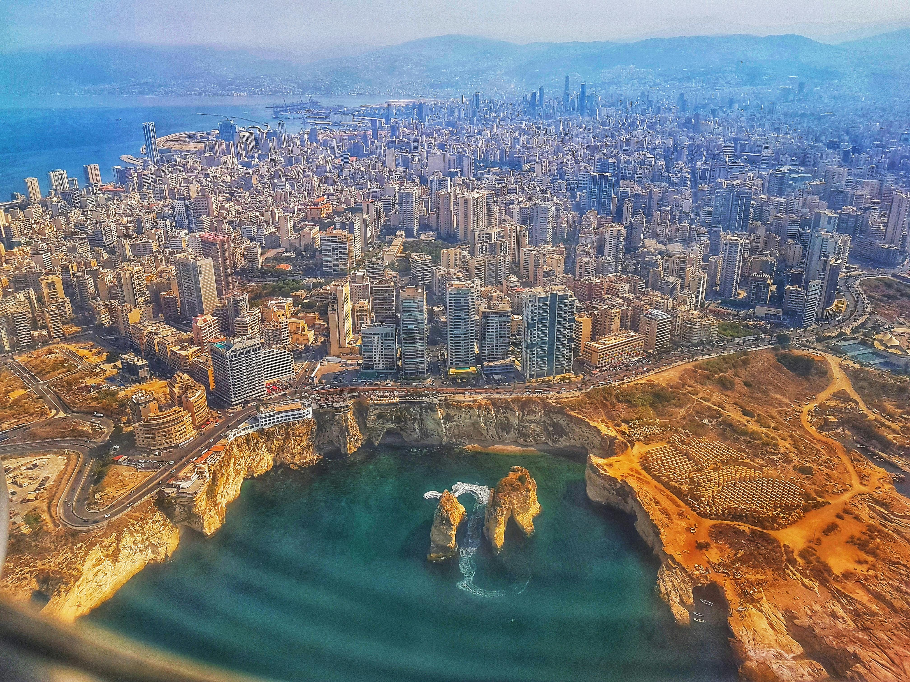
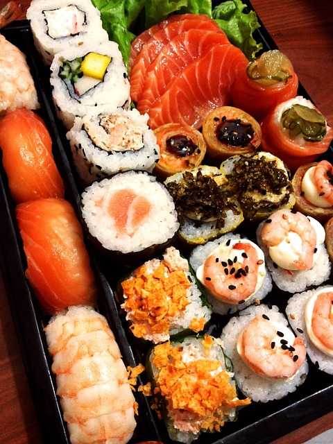

My Favorite Hobby
My favorite hobby is traveling. I love visiting new places around the world,
and I've yet to explore so many countries. Each country is unique in their
own way, and that's what makes this world so diverse and thrilling.


Above is a picture of two places I would like to travel to this summer.
The picture on the left is an image of Switzerland, and the picture to the right
is an image of France. Both of these countries' sites are breathtaking, and
hundreds of thousands of toursits come each year to visit these places.
Below is a list of the places I would like to visit the most:
My Top Vacation Spots
- France
- Switzerland
- Spain
- Germany
- Portugal
- Argentina
The Mediterranean
3 years ago I traveled to Lebanon. It was one of the most exciting vacations I've ever had.
To start off, I got to meet my big family, and I was introduced to so many new and unique foods.
I got to travel to so many different cities, one of them being the largest city, Beirut. I loved
traveling to Lebanon, because everyone was very kind and respectful to one another. This year I
plan on going to the Mediterranean for vacation, in hopes of exploring Greece.
Below is a following list of my top vacation spots in the Mediterranean:
- Lebanon
- Egypt
- Jordan
- Turkey
- Morocco

Above are three different pictures on three of the mentioned countries above.
The picture to the left is an image of Beirut, Lebanon. The picture in the
middle is a picture of the pyramids in Egypt. The final picture is a picture
of Istanbul, Turkey. All of these countries have one thing in common: They all
have an awestriking view, which attracts hundreds of thousands of tourists to
their cities.
Asia
I always thought that Asia was a really vivid place to live in. Since it has hundreds
of countries, there is so much to explore. Asia has some countries with the largest
populations in the world, including China and India. Asian food is amazing, because
their dishes are extremely unique and delicious. Asia is a place I hope on visiting
sometime in the next few years.



The above pictures are on three of the largest things Asia is known for. The first picture
is an image of sushi at the left, and this is one of my favorite dishes. The second picture
in the middle is Taj Mahal, which is located in India and is visited hundreds of millions of
times every year. The final picture is one of the most beautiful pictures I've ever seen, and
that is Mount Fuji. This mountain is found in Japan, and it is truly something marvelous to look
at.
Below is a table of all the places I want to go to in Asia and why:
Top Vacation Spots In Asia
| Mount Fuji, Japan |
Phuket, Thailand |
Singapore |
Taj Mahal, India |
Beijing, China |
| This is my number one |
This is my number two |
This is my number three |
This is my number four |
This is my number five |
| It's breathtaking and I want to see it in real life. |
This is one of the most relaxing vacation spots to me. |
This is a very funny country I would like to explore. |
I've always seen pictures of this place, and I want to see
its true size.
|
This is one of the largest countries in the world, and I want
to witness how they live in their everyday lives.
|
| I love nature, and Mount Fuji is beautiful. |
this place makes me feel relaxed just looking at it. |
I like this country, since it seems super fun to explore. |
I get to visit one of the largest tourist attractions in the world. |
I get to see how others live in relation to how we live in the U.S. |